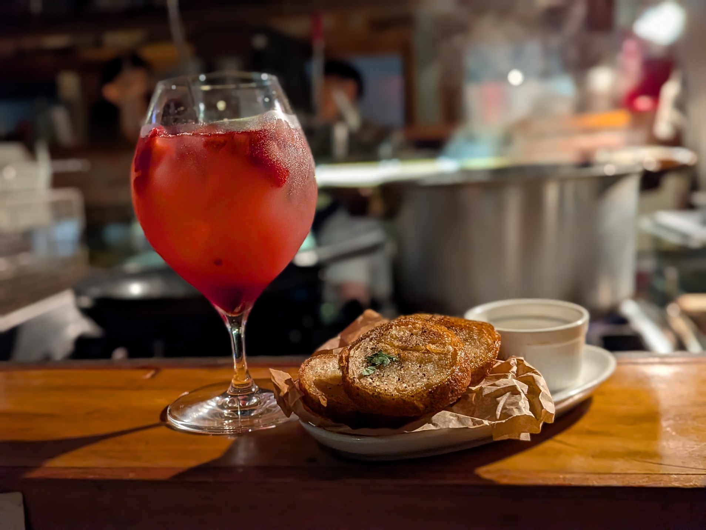

WINE
ワイン
お料理に寄り添うワインをセレクト。お好みの味や気分を、気軽にお聞かせください。
HOME / WINE & DRINKS
おつまみとの相性も、その日の気分も。
グラスを選ぶ時間から、楽しんで。
WINE
お料理に寄り添うワインをセレクト。お好みの味や気分を、気軽にお聞かせください。

CRAFT SOUR & SANGRIA
自家製クラフトサワーやサングリア。果実の風味を楽しみながら、ゆっくりと。
NO RESERVATIONS. JUST DROP IN.
ご予約は承っておりません。
ふらっと、そのままお越しください。